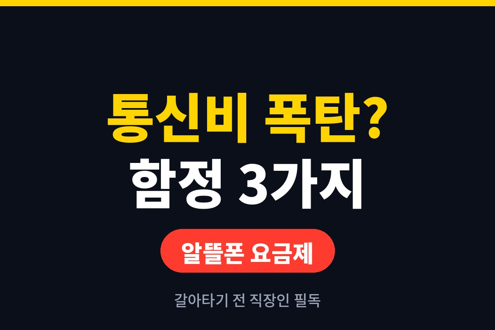
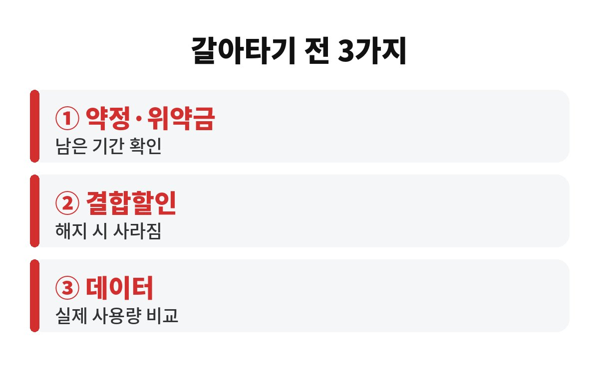
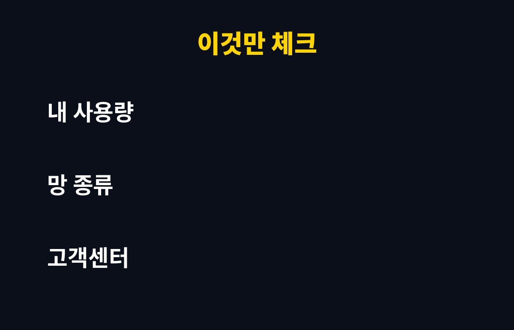

알뜰폰 요금제는 통신 3사 망을 그대로 빌려 쓰면서 요금만 낮춘 상품이라, 갈아타면 통신비가 확 줄어드는 경우가 많습니다. 그런데 통신비 아끼려다 오히려 손해를 봤다는 직장인이라면, 어디서 함정에 걸리는 걸까요?
저도 주변에서 "싸다고 해서 바꿨는데 왜 더 나가지?"라는 말을 꽤 들었어요. 알뜰폰 요금제는 싼 건 맞지만, 내 상황에 맞지 않게 고르면 이득이 사라지거든요. 오늘은 갈아타기 전에 꼭 짚어야 할 세 가지를 풀어볼게요.
알뜰폰은 SKT, KT, LG U+ 망을 빌려 쓰기 때문에 통화 품질과 데이터 속도는 기본적으로 같은 망을 사용합니다. 그래서 "싸면 터지는 거 아니야?" 하는 걱정은 대부분 기우예요.
다만 차이가 나는 부분은 따로 있어요. 고객센터 응대 속도, 매장 방문 상담 가능 여부, 일부 부가서비스 지원 같은 것들이죠. 휴대폰 문제가 생겼을 때 바로 직원을 만나야 마음이 편한 분이라면 이 부분은 꼭 따져 보세요.
가장 흔한 첫 번째 함정은 결합할인입니다. 가족이 통신사 하나로 묶여 있거나 인터넷과 결합해서 할인을 받고 있다면, 한 명만 알뜰폰으로 옮겨도 나머지 가족의 할인이 사라질 수 있어요. 내 요금은 줄었는데 가족 요금이 올라서 합계는 비슷하거나 더 나가는 경우가 생기죠.
두 번째 함정은 약정과 위약금입니다. 기존 통신사에 선택약정이나 단말기 할부가 남아 있다면, 중간에 해지할 때 비용이 붙을 수 있어요. 남은 기간이 얼마인지, 기다렸다가 옮기는 게 나은지 먼저 확인해야 합니다.
세 번째 함정은 프로모션 기간이에요. 알뜰폰은 처음 몇 달만 아주 싸고 이후에 요금이 오르는 상품이 많습니다. 광고에 크게 적힌 가격이 평생 가격이 아닐 수 있다는 뜻이죠. 꼭 "할인이 끝난 뒤 정상 요금"을 따로 확인하세요.
요금제를 고를 때 제일 많이 하는 실수가 "많이 주는 걸 고르자"입니다. 쓰지도 않을 데이터에 돈을 내는 셈이거든요. 먼저 최근 몇 달 동안 실제로 쓴 데이터 양을 통신사 앱에서 확인해 보세요.
회사나 집에서 와이파이를 주로 쓰는 분이라면 데이터가 작은 요금제로도 충분합니다. 반대로 출퇴근길에 영상을 많이 보는 분이라면 데이터를 다 쓴 뒤 속도가 제한되는 방식도 함께 살펴야 해요.

복잡하게 생각할 것 없이 아래 세 줄만 확인하면 됩니다.
① 내 약정과 단말기 할부가 남았는지 ② 가족·인터넷 결합할인이 깨지는지 ③ 할인 종료 후 요금이 얼마인지. 이 세 가지만 맞아떨어지면, 알뜰폰 요금제는 통신비를 줄이는 가장 쉬운 방법 중 하나예요.
번호이동 자체는 요즘 온라인으로 몇 분이면 끝나서 어렵지 않아요. 다만 신청 전에 현재 통신사에서 남은 요금과 해지 조건을 한 번 조회해 두면 나중에 놀랄 일이 없습니다. 한 번 정리해 두면 이후로는 매달 고정비가 확실히 줄어드니, 시간이 날 때 꼭 한 번 비교해 보세요.

여러분은 지금 한 달 통신비로 얼마를 내고 계신가요? 갈아탄 경험이 있다면 어떤 점이 가장 좋았는지 댓글로 알려 주세요. 도움이 되셨다면 구독해 주시면 생활 속 돈 아끼는 이야기를 계속 전해 드릴게요.
※ 본 글은 일반적인 정보 제공이며 투자 권유가 아닙니다. 요금제 조건은 통신사·상품별로 다르니 가입 전 직접 확인하세요.